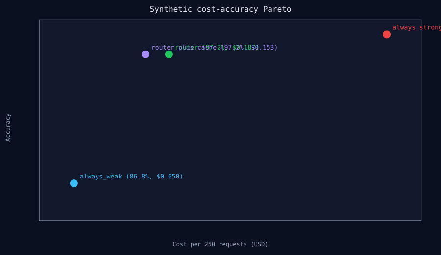

RouteLLM · calibrated routing
RouteLLM-Gateway
Bradley–Terry cost-quality routing with a semantic cache, schema fallback, and OpenAI/Anthropic-compatible streaming.
98.38%accuracy retention vs always-frontier
69.40%cost reduction
0.74calibrated threshold
13.6%cache hit rate

| System | Accuracy | Cost / 250 | p50 |
|---|---|---|---|
| Always frontier | 98.80% | $0.5000 | 650 ms |
| Router | 97.20% | $0.1868 | 120 ms |
| Router + cache | 97.20% | $0.1530 | 120 ms |
Synthetic mock-provider benchmark. Not MMLU-Pro or GSM8K; real provider keys were unavailable.
Measured local evidence only. No deployment, customer, or trained-weight claim is made unless explicitly stated.